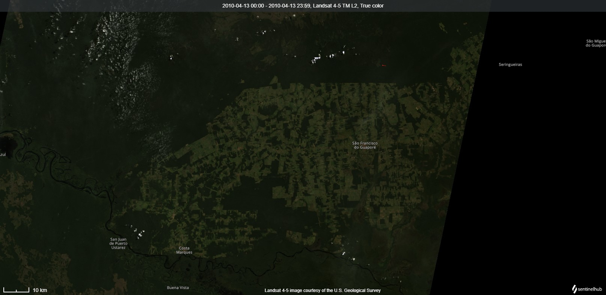

Attraverso l'analisi di immagini satellitari ad alta risoluzione, è possibile osservare in modo diretto l’impatto della deforestazione nella regione nord-orientale del Brasile.
Queste immagini rivelano la perdita progressiva della copertura forestale, monitorando in tempo reale le trasformazioni ambientali e supportando strategie di riforestazione mirate e localizzate.